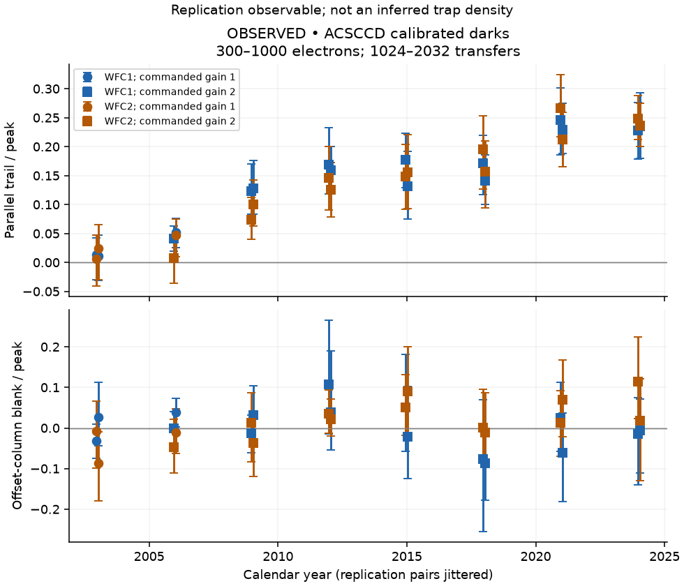
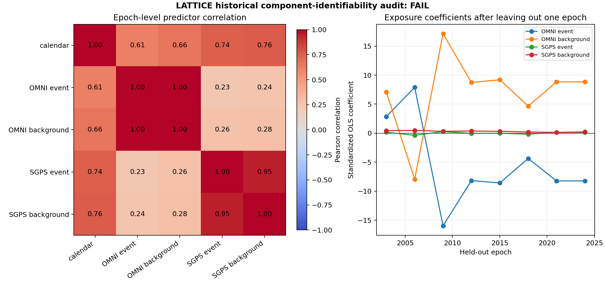

A detector is not a passive witness
I tend to think about an astronomical image as the end of a journey. Light leaves something interesting, crosses a ridiculous distance, passes through optics, and finally reaches a detector. It is tempting to treat that last step as a reliable full stop. Photon arrives. Number appears. Astronomy continues.
The detector has other ideas.
In a CCD, collected charge has to be transferred through the device before it is read out. If some charge is captured and released later, a compact feature can leave a trail. The detector has not remembered the galaxy in a human sense. Its charge-transfer behaviour has retained part of the signal for longer than we wanted. That is already enough to complicate a measurement.
LATTICE began with a more ambitious question: could information about the external radiation environment help explain and forecast detector damage? The present release does not establish that attribution. It does contain a replicated longitudinal detector measurement. Those two statements belong together (Jana, 2026).
What charge transfer can do to an image
The important operation is not just collecting electrons in a pixel. It is moving a packet of electrons repeatedly towards an output amplifier. Defects can capture charge during transfer and release it after the original packet has moved on. The resulting redistribution can affect measured flux, position and shape.
Anderson and Bedin (2010) develop an empirical pixel-based correction for ACS charge-transfer losses. Massey et al. (2014) discuss a more detailed CTI model and correction algorithm. These papers provide physical and methodological context. They do not validate LATTICE's exposure proxies or turn its trailing statistic into a calibrated measurement of trap density.
Signal level, background, temperature, transfer timing and previous charge history can matter to the response. This is exactly why a trend in a detector statistic is not automatically a radiation-dose history. The observable has several possible influences, and some of them change together over a mission.
The first job was to measure something repeatable
The historical project sample uses 48 public ACS/WFC dark exposures at eight epochs spanning 2003-2024. Each epoch contributes a development pair and two independently selected replication pairs. The project applies documented calibration and gain conversion before measuring a compact-feature trailing observable (Jana, 2026).
That pairing matters. A feature that appears only under one extraction or one convenient pair is a fragile basis for a physical interpretation. Independent replication pairs and blank controls ask whether the measurement survives changes that should not manufacture the claimed signal.

The longitudinal slopes are positive in the four pair-by-chip replication strata, with positive epoch-bootstrap intervals. The adjusted blank-control intervals do not exclude zero. That supports a repeatable detector-related measurement under the stated pipeline. It is not the same as proving that the entire increase is caused by an external radiation predictor.
Notice the level at which the uncertainty is assessed. Many peak measurements can come from the same epoch and detector state. They do not become thousands of independent historical experiments. The eight epochs remain a central limit on the inference, however impressive the extracted-peak count looks.
A successful simulation does not validate the sky
The project's exact-posterior method passes its current synthetic-recovery tests. That is worthwhile. If an inference procedure cannot recover known parameters from suitable simulated data, we should not trust it on less cooperative observations.
But synthetic recovery answers a conditional question: can the implementation work when the data-generating assumptions match the experiment? It does not establish that the real detector follows those assumptions, that the external environment proxy represents dose, or that the historical design separates competing explanations.
LATTICE's historical forecast and attribution gates fail. Some numerical transfer tests pass while a first science-bias measurement gate also fails. These are different layers of validation. Combining all the green checks into the phrase “validated radiation model” would erase the red checks that actually limit the scientific claim.
The predictors were telling nearly the same story

The audit has eight independent epochs and six fitted parameters. That leaves only two residual degrees of freedom in the stated design. Several predictors track time and one another closely. When multiple columns carry almost the same information, a fitted coefficient can change sign because the model reallocates an explanation between them.
The interesting part of the figure is therefore not just a dark square in a correlation matrix. Look at whether coefficients remain stable when one epoch is omitted. If the answer to “which component matters?” changes with a single historical point, the design is not supporting the level of attribution we wanted.
This does not prove that radiation is irrelevant to CCD damage. The detector literature already gives strong reasons to study radiation-induced defects. It means this particular sparse historical dataset and proxy model cannot establish the proposed component-level explanation. Failure to identify an effect is not proof that no effect exists.
Why one missing electron can affect more than photometry
In a CCD readout, each transfer can expose a charge packet to capture and later release. A simplified picture might assign a per-transfer inefficiency ε and write a retained fraction (1 - ε)ᴺ after N transfers. If ε is small, the fractional loss is approximately Nε. For illustration, ε = 10⁻⁵ over 2,000 transfers gives about two per cent loss. This is a teaching calculation, not a CTI measurement for ACS.
The simple loss model leaves out where the captured charge goes. An electron released one transfer later can enter a neighbouring pixel; an electron released much later can create a longer tail or leave the extraction aperture. The total collected charge, aperture photometry, centroid and shape can therefore respond differently. Charge conservation in a numerical transfer routine does not prove that a finite-aperture flux estimator is unbiased.
The capture and release times relative to the clocking time are central to the effect. An immediately filled trap, a trap releasing within the next transfer, and a much slower trap do not create the same spatial trail. This is why physically informed correction methods need more than a single scalar “damage” value (Anderson and Bedin, 2010; Massey et al., 2014).
The measured quantity is a ratio, not a trap counter
LATTICE's plotted quantity is a selected parallel-trail signal relative to a compact peak. The result is conditioned on the feature-selection procedure, transfer range, signal range and calibration. In the released replication figure, the primary selected regime is 300-1,000 electrons and 1,024-2,032 transfers. Those restrictions define where the reported statistic applies.
Suppose a simplified two-pixel object has 100 electrons in a central pixel and 10 in the next pixel along readout. A trail/peak ratio of 0.1 is easy to calculate. It does not tell us whether the neighbouring charge was all released by traps, how many defects existed, or whether another image component contributed. It is an observable that can constrain a model, not a direct count of microscopic defects.
The corresponding centroid shift in this two-pixel example is 10/110 pixel, about 0.091 pixel, if the central pixel is assigned coordinate zero. The example is deliberately elementary. It shows why a modest redistributed fraction can affect an astrometric estimator even when the discussion began with detector calibration. A real PSF, background and extraction aperture require a more complete calculation.
What the replication intervals actually support
The independent replication cohort contains 32 dark exposures, separate from the 16-exposure development cohort. Their measured summaries produce four independently screened pair-by-chip slopes. The project reports the following values in units of its dimensionless trail/peak statistic per year:
| Replication pair | Chip | Slope per year | 95% epoch-bootstrap interval |
|---|---|---|---|
| 2 | WFC1 | 0.01061 | 0.00630 to 0.01389 |
| 2 | WFC2 | 0.01328 | 0.01093 to 0.01641 |
| 3 | WFC1 | 0.00981 | 0.00591 to 0.01208 |
| 3 | WFC2 | 0.00995 | 0.00857 to 0.01105 |
Positive intervals support a positive trend in this selected measurement. They do not validate a unique trap species, shielding history or detector dose. The apparent linear slope is a descriptive fit over the sampled epochs, not a physical law to extrapolate indefinitely.
The blank-control screen has its own multiplicity issue. Testing 32 intervals at an unadjusted five per cent level would create multiple opportunities for a chance positive. The project instead uses a Bonferroni per-interval alpha of 0.05/32 for that family of controls. Passing that screen addresses the specified false-positive family; it is not a general certificate that all possible measurement biases have been removed (Jana, 2026).
Read the two panels together
The upper panel of the replication figure shows the longitudinal selected trailing statistic. The lower panel measures offset-column blank controls, which should not reproduce the same signal if the procedure is isolating what it intends to measure. Their axes are related but their scientific roles differ: the first is the target observable; the second is a diagnostic for an alternative explanation.
The development and replication summaries have a reported correlation of 0.9678 and mean absolute difference of 0.01944. That is encouraging repeatability evidence, but correlation alone does not establish agreement in absolute scale. Two methods can be strongly correlated while differing systematically. Interval overlap is likewise descriptive; it is not an equivalence test with a declared tolerance.
For a reader interested in using the observable, the useful question is whether that tolerance is small compared with the downstream scientific effect. A measurement can be repeatable enough to detect a long-term trend and still be inadequate for a high-precision correction of faint-source shapes. Those are different performance requirements.
The matrix explains the attribution failure
Write the historical regression schematically as y = Xβ + ε. If two columns of X vary almost together, the observed y may constrain a combination of their coefficients without constraining each coefficient separately. The fitted prediction can remain similar while individual β values move substantially.
For the standardised historical design, the reported condition number is 175.31. The OMNI event and background proxies correlate at 0.9981, with variance-inflation factors above 4,000. Using VIF = 1/(1 - R²), a VIF near 4,000 corresponds to one predictor being explained by the others with R² around 0.99975. This is a severe separation problem, not a small aesthetic defect in a correlation matrix.
Eight epoch-level predictor vectors and six fitted parameters leave two residual degrees of freedom. More peak measurements within those same epochs can sharpen an epoch's observable, but they do not manufacture new independent exposure histories. Replicating the detector measurement and identifying environmental components therefore have different effective sample sizes.
The leave-one-epoch-out sign changes are informative for the same reason. They show that the allocation of the historical explanation is fragile. They do not show that a radiation component physically reversed its effect between fits. The model is struggling to distinguish correlated inputs.
Prediction, attribution and correction need separate tests
A future forecast should be evaluated on a later epoch without letting that epoch influence development choices. A causal attribution needs a design that separates radiation exposure from time-varying engineering and calibration state. A science correction needs tests on the estimators used for real sources. Passing one does not imply passing the others.
For example, a model could accurately predict the trail ratio using calendar time alone, while its radiation coefficients remain uninterpretable. Another model could represent transfer physics plausibly but fail to predict a faint-galaxy shape estimator after background subtraction. Neither situation is resolved by calling the whole pipeline a digital twin.
That is why the current release keeps its physical-inference gate closed. The unopened temporal holdout is not a spare dataset to inspect whenever an explanation becomes uncomfortable. Keeping it separate preserves the possibility of a meaningful later test. The practical next step is better experimental support, not a more confident label on the same sparse design.
What I would change before making a forecast
I would want better-separated environmental and engineering information, more independent epochs, and measurements that more directly constrain the physical state of the device. I would compare against simple time-only baselines and keep genuinely future observations separate from model development. A complicated model should have to outperform the explanation “things changed with mission age”.
I would also keep the environment measurements separate from mission-specific response proxies. A particle record measured elsewhere is not automatically the dose inside a shielded detector. Missing intervals should remain missing, and a band-integrated proxy should not be relabelled as a dosimeter because the units look inconvenient.
There is a useful result here, even though it is smaller than the opening ambition. The detector-trailing observable replicated. The physical-attribution claim did not pass. Reporting both tells a future reader where the evidence is solid and where a different experiment is needed.
That is the version of the story I want on my website. A detector can leave a trail. A research project should leave one too, especially when the model does not get the answer it wanted.
References
Anderson, J. and Bedin, L.R. (2010) ‘An empirical pixel-based correction for imperfect CTE. I. HST’s Advanced Camera for Surveys’, Publications of the Astronomical Society of the Pacific, 122, pp. 1035-1064. Available at: https://doi.org/10.1086/656399.
Jana, B. (2026) LATTICE: Latent Astronomical Trap Tracking & Inference across Cosmic Environments [Software and research outputs]. Available at: lattice-radiation-twin (Accessed: 21 October 2026).
Massey, R. et al. (2014) ‘An improved model of charge transfer inefficiency and correction algorithm for the Hubble Space Telescope’, Monthly Notices of the Royal Astronomical Society, 439, pp. 887-907. Available at: https://doi.org/10.1093/mnras/stu012.